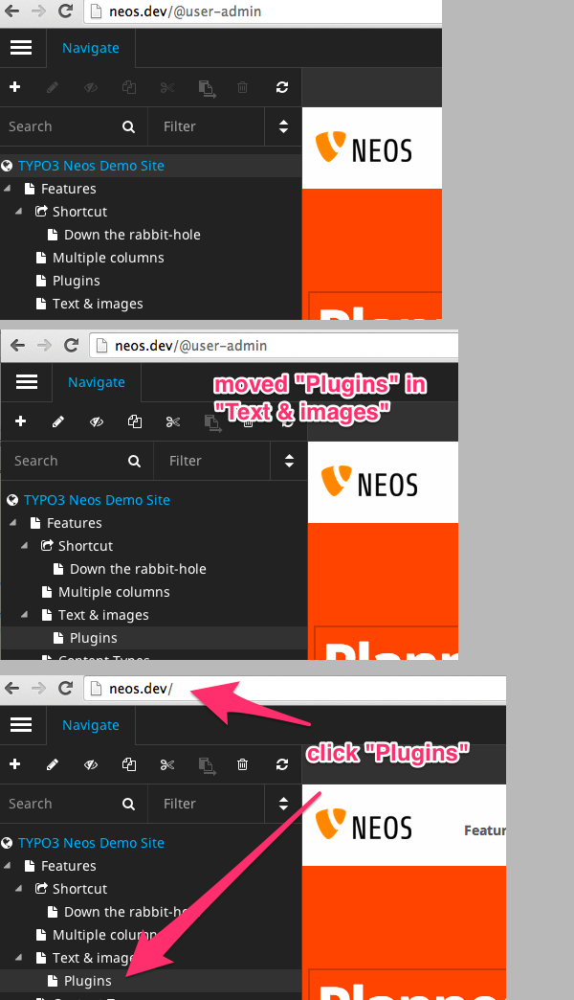
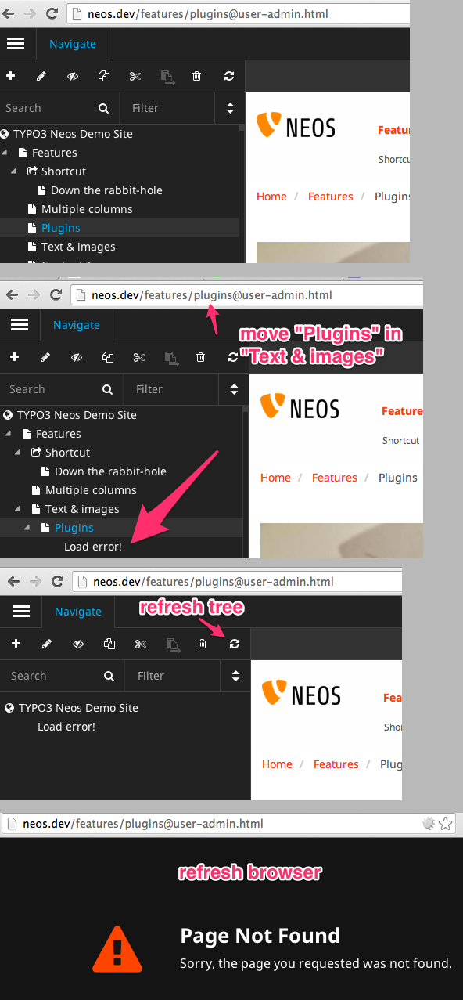
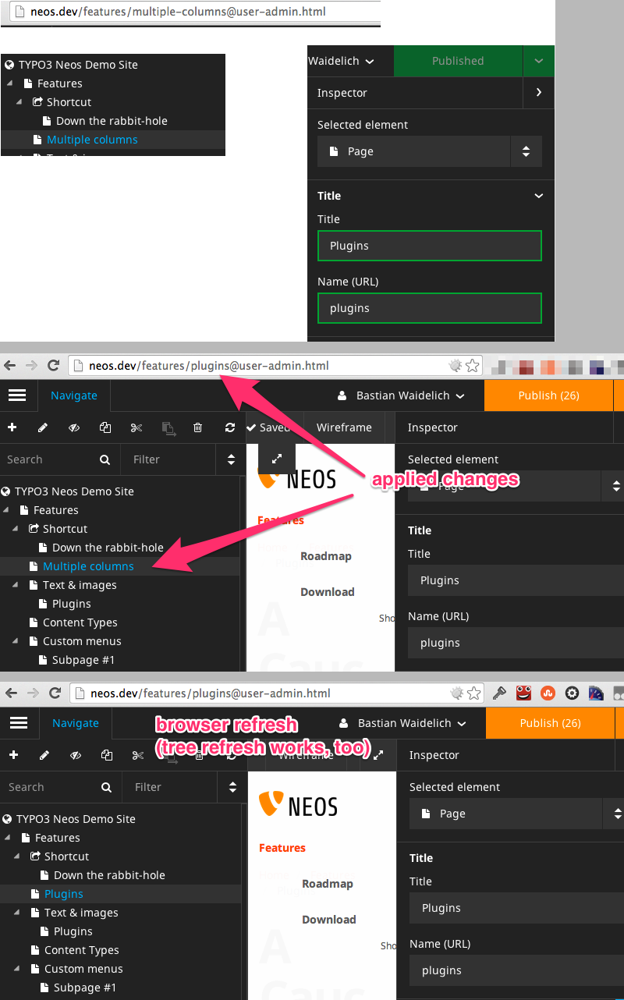
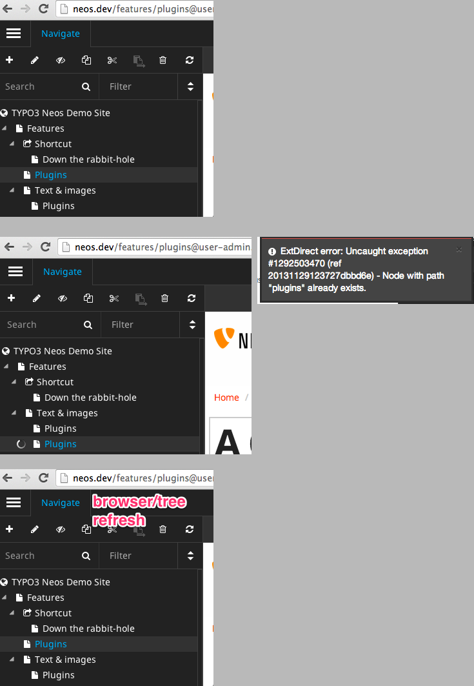
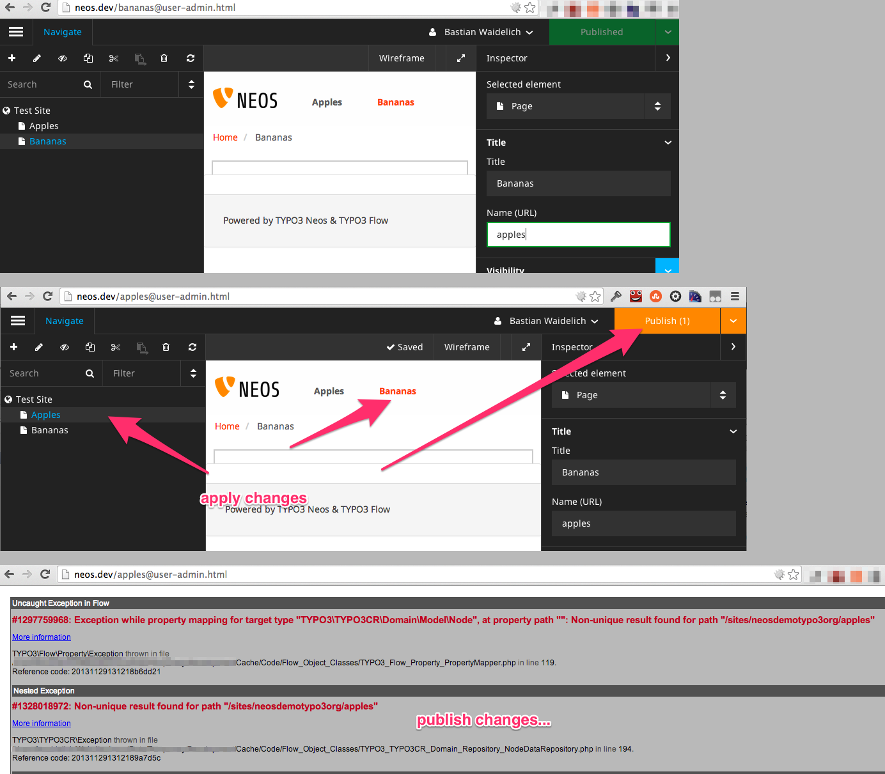

Task #54080
Work Package #47023: Global user interface
Task #48071: Navigate component
As a content editor I want to be able to move pages
| Status: | Resolved | Start date: | 2013-11-29 | |
|---|---|---|---|---|
| Priority: | Must have | Due date: | ||
| Assigned To: | Bastian Waidelich | % Done: | 100% |
|
| Category: | Content Repository | Spent time: | - | |
| Target version: | - |
Description
Moving/renaming document nodes currently has some weird side-effects:
Moving a page that is not selected¶
Expected: The navigate component should be reloaded, the current page should still be selected
Actual: The current page stays selected as expected, but it's not possible to navigate to the moved page, Browser refresh required

Moving the currently selected page¶
Expected: The navigate component should be reloaded, the moved page should be selected
Actual: The current page stays selected but with the old node path leading to "tree load errors. Browser refresh leads to 404. Navigation to "/neos" required

Renaming a page¶
Expected: The navigate component should be reloaded, the renamed page should be selected
Actual: The current page stays selected but with the old node path and name, Browser refresh required
see #53610

Moving a page creating a tree conflict¶
Expected: A.) It should not be possible to move the page B.) A "human readable" error should be shown, refreshing the navigate component with the previous state
Actual: An ExtDirect error is displayed, navigate component "dies" with a loading animation. Browser refresh required

Renaming a page creating an irreversible tree conflict¶
Expected: A.) It should not be possible to rename the page to an existing node name B.) A "human readable" error should be shown, restoring the previous state
Actual: The navigate component selects the other page with the same node name, publishing leads to an invalid CR state that can only be solved by fixing the db directly!

Measures¶
We should start with behat tests covering all common tree interactions (moveAfter, moveIn, moveBefore, rename) with and without publishing
{kind=link}
{kind=link}
{kind=link}
{kind=link}
{kind=link}
Related issues
Associated revisions
[BUGFIX] Prevent corrupted node trees
Currently if two nodes with the same path are in the same workspace,
an exception is thrown putting Neos into an irreversible state.
This change adds a unique index so that duplicate paths are prevented
on the database level.
Note: This is only a safeguard to prevent the incorrect state from
being persisted. When publishing a node with a duplicate path now,
still an exception is thrown. But at least the state is now
reversible through the UI (by discarding the workspace changes).
Background:
Simply adding a unique index over the "path" and "workspace" columns
did not work out, because of the large columns. This is the reason
for the new column "hashedPath" that always contains the MD5 hash of
the current path.
In a future change we can adjust some of the node lookups to compare
the value with a pre-calculated hash over the path for a possible
performance boost.
Change-Id: I75faece045ae2df9249744956886c270b291fb64
Related: #54080
Reviewed-on: https://review.typo3.org/25974
Reviewed-by: Christopher Hlubek
Tested-by: Christopher Hlubek
Reviewed-by: Christian Mueller
Tested-by: Christian Mueller
[BUGFIX] Fix the moving of the currently selected node in the page tree
- Reload the tree correctly if moving a selected page
- Load the correct page of the selected page at the moved URL
Change-Id: I1ae5a37439180382cc906e5fdb43d79593df0c11
Related: #54080
Reviewed-on: https://review.typo3.org/26085
Reviewed-by: Tim Kandel
Tested-by: Tim Kandel
Reviewed-by: Christopher Hlubek
Tested-by: Christopher Hlubek
History
#1 Updated by Aske Ertmann over 1 year ago
- Parent task changed from #40297 to #48071
#2 Updated by Bastian Waidelich over 1 year ago
- Assigned To deleted (
Christian Müller)
#3 Updated by Bastian Waidelich over 1 year ago
- Status changed from New to Resolved
- Assigned To set to Bastian Waidelich
- % Done changed from 0 to 100
Those issues are mostly resolved with 1.0!